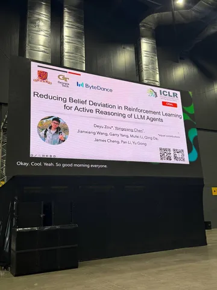
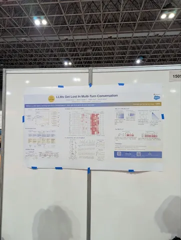

Там происходит 14-я конференция International Conference on Learning Representations, а инженеры Яндекса, которые находятся на месте событий, делятся самым интересным, что увидели. А увидели они вот что.
Доклад Reducing Belief Deviation in Reinforcement Learning for Active Reasoning
Авторы рассматривают проблему многошагового агентного RL. Когда LLM-агенты взаимодействуют с внешними источниками (тулами) на протяжении нескольких шагов, для решения задач им необходимо поддерживать точное внутреннее представление о состоянии задачи (belief tracking).
Авторы формализуют определение точки отказа (которую они называют «отклонением убеждений», belief deviation). После этого дальнейшие шаги рассуждения получаются мусорными — агент просто не может вернуться к точке, где рассуждения были ещё корректны. Почему это проблема? Потому что после наступления belief deviation это отклонение усиливается через RL-обучение. Такие поломанные траектории ломают распределение награды и ухудшают эксплорейшен агента.
Как лечат? Предлагают метод T³ , который позволяет детектировать наступление belief deviation и не давать подобным траекториям награду, чтобы не усиливать галлюцинации в RL.
Постер Beyond Prompt-Induced Lies: Investigating LLM Deception on Benign Prompts
Идея в том, что LLM могут лукавить даже на безобидных запросах: на сложном вопросе дать удобный короткий ответ без нормального обоснования, а на более лёгком follow-up — внезапно показать более длинное и содержательное рассуждение. Авторы сравнивают пары «сложный вопрос — более простой уточняющий» и показывают, что в несогласованных случаях модель часто думает меньше на сложном шаге и больше на простом. Основной тезис — часть такого поведения похожа не просто на галлюцинацию, а на shortcut под нагрузкой: чем труднее задача, тем чаще модель срезает путь.
Доклад LLMs Get Lost In Multi-Turn Conversation
Обычно LLM замеряется в one-shot-режиме – один полностью сформулированный промпт и один ответ. Но реальные пользователи так общаются редко: они уточняют задачу по кускам, добавляют ограничения, исправляют формулировки.
Авторы делают ровно то же самое: берут стандартные бенчмарки, разбивают инструкцию на части и превращают задачу в multi-turn. Замеряют 15 моделей, 6 генеративных задач, 200k+ симуляций. В multi-turn-режиме качество падает в среднем на 39%.
Проблема в потере надежности. Модель рано делает предположение, прыгает к ответу, а потом достраивает неправильную ветку разговора вместо того, чтобы переосмыслить контекст. И это проблема не только слабых моделей. Видимо, мы слишком RL-нули их в сторону мгновенного helpfulness.
Один из авторов поделился интересной гипотезой: looped LLMs (которым может быть недавний релиз Claude Mythos), могут быть лучше приспособлены к таким сценариям, потому что умеют возвращаться к ранним предположениям и пересобирать решение.
В общем, модели отлично работают в стерильных условиях, но гораздо менее надежны в диалоговой неопределённости.
Интересное увидели
#YaICLR26
Душный NLP

